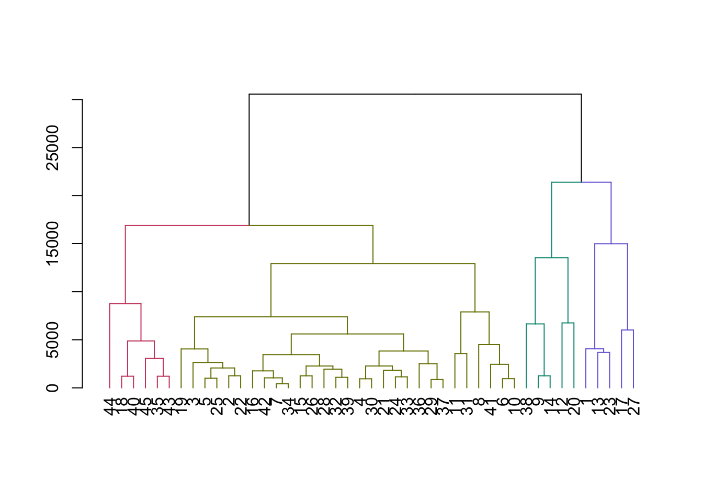

Lab 6 - Métodos Não-Supervisionados em Machine Learning
Métodos de Clustering
Sobre os dados
Para este lab vamos usar 3 datasets:
- O primeiro sobre a satisfação e lealdade de clientes;
- O segundo sobre compras de produtos (para realizar segmentação de mercado);
- O último dataset sobre salários de diferentes profissões (para agrupamento de profissões com crescimento de salários similares).
Você pode baixar os dados
aqui.Carregando pacotes
library(tidyverse)
library(dendextend) # para colorir os agrupamentos do cluster hirárquico
library(cluster) #para usar função pam
library(cowplot) #para plotar vários gráficos juntos
library(plotly)
library(factoextra)Segmentação de clientes - K-means
Vamos começar com um exemplo simples de segmentação de clientes, usando apenas dois atributos: a satisfação do cliente e a sua lealdade.
customers <- read.csv("data5/customers.csv")
customers %>%
ggplot(aes(Satisfaction, Loyalty))+
geom_point(size=2)
customers <- scale(customers)
customers_df <- as.tibble(customers)
model <- kmeans(customers_df, centers = 2)
cluster_km <- model$cluster
ggplotly(customers_df %>%
mutate(cluster = cluster_km) %>%
ggplot(aes(Satisfaction, Loyalty, color = factor(cluster)))+
geom_point(size=3)+
theme_bw()+
scale_color_viridis_d())Para escolher o número ideal de clusters, podemos usar o método do
“Elbow”. Para isto, vamos criar primeiramente uma função que facilite a
criação de modelos k-means, logo iremos usar esta função
criar_k_means() para gerar os valores das somas dos
quadrados para diferentes valores de k.
Método Elbow
criar_k_means <- function(k){
model <- kmeans(customers_df, centers = k)
model$tot.withinss
}
k = 10
elbow <- data.frame(k=1:k)
elbow$tot.withinss <- 0
for(i in 1:k) {
elbow$tot.withinss[i] <- criar_k_means(i)
}
elbow %>%
ggplot(aes(k, tot.withinss))+
geom_line(color="red")+
geom_point(size=4, color="red")+
scale_x_continuous(breaks=1:10)+
theme_bw()
Método da Silueta
Similarmente, usaremos um segundo método para identificar o número ideal de cluster, o método da silueta.
library(cluster)
criar_siluetas <- function(k){
model <- pam(customers_df, k = k)
model$silinfo$avg.width
}
k = 10
sil_df <- data.frame(k=2:k)
sil_df$sil_width <- 0
for(i in 2:k) {
sil_df$sil_width[i-1] <- criar_siluetas(i)
}
sil_df %>%
ggplot(aes(k, sil_width))+
geom_line(color="#e32d91")+
geom_point(size=4, color="#e32d91")+
scale_x_continuous(breaks=1:10)+
theme_bw()
Neste método, quanto maior for o valor do sil_width,
melhor será a escolha do número de clusters. Para o exemplo, o valor
mais alto é quando são 2 clusters (0.47).
Com factoextra
Vamos repetir o exercício anterior usando o pacote
factoextra e a função eclust().
res.km <- eclust(customers_df, "kmeans", k=2)Gráfico de dispersão:
fviz_cluster(res.km)
No gráfico da silueta abaixo, podemos verificar que o valor médio do
width é de 0.47. Quanto mais alto for este número
melhor.
fviz_silhouette(res.km)## cluster size ave.sil.width
## 1 1 22 0.44
## 2 2 8 0.53O objeto res.km contém as informações dos clusters:
res.km$cluster## [1] 2 1 2 1 1 2 1 1 1 1 1 1 2 2 1 1 1 1 1 1 1 2 1 2 1 1 1 1 2 1O que significa que podemos incluir essa coluna no dataframe original para assignar um cluster a cada observação:
customers_segmentados <- customers_df %>%
mutate(cluster = res.km$cluster)Segmentação de clientes - Cluster hierárquico
calcular a distância euclidiana entre clientes
clientes <- readRDS("data5/ws_customers.rds")
dist_clientes <- dist(clientes)criar uma análise usando o algoritmo da distância completa:
ch_clientes <- hclust(dist_clientes, method = "complete")graficar o dendograma:
plot(ch_clientes)
Criar uma asignação de clusters no valor de altura h = 15000
clust_clientes <- cutree(ch_clientes, h=15000)Gerar um dataframe com os clientes segmentados
clientes_segmentados <- mutate(clientes, cluster = clust_clientes)Calcular o número de clientes que fazer parte de cada cluster
count(clientes_segmentados, cluster)## cluster n
## 1 1 5
## 2 2 29
## 3 3 5
## 4 4 6colorir o dendograma com base no valor de cutoff
dend_clientes <- as.dendrogram(ch_clientes)
dend_colorido <- color_branches(dend_clientes, h=15000)
plot(dend_colorido)
calcular a média para cada cluster
clientes_segmentados %>%
group_by(cluster) %>%
summarise_all(mean)## # A tibble: 4 × 4
## cluster Milk Grocery Frozen
## <int> <dbl> <dbl> <dbl>
## 1 1 16950 12891. 991.
## 2 2 2513. 5229. 1796.
## 3 3 10452. 22551. 1355.
## 4 4 1250. 3917. 10889.Com base neste resultado, podemos inferir que:
Os clientes do cluster 1 gastaram mais em Leite do que os outros grupos
Os clientes do cluster 3 gastaram mais em mercado do que os outros grupos
os clientes do cluster 4 gastaram mais em frozen iogurte do que os outros grupos
Os clientes do cluster 2 gastaram consideravelmente menos do que os outros clusters
Com factoextra
Vamos repetir o exercício anterior usando o pacote
factoextra e a função eclust().
clientes_df <- scale(clientes)
res.hc <- eclust(clientes_df, "hclust")
fviz_dend(res.hc, rect = TRUE)
Gráfico da silueta
fviz_silhouette(res.hc)## cluster size ave.sil.width
## 1 1 10 0.35
## 2 2 29 0.62
## 3 3 6 0.57
Gráfico de dispersão:
fviz_cluster(res.hc)O objeto res.hc contém as informações dos clusters:
res.hc$cluster## [1] 1 2 2 2 2 2 2 2 1 2 2 1 1 1 2 2 1 3 2 1 2 2 1 2 2 2 1 2 2 2 2 2 2 2 3 2 2 1
## [39] 2 3 2 2 3 3 3O que significa que podemos incluir essa coluna no dataframe original para assignar um cluster a cada observação:
clientes_segmentados <- clientes %>%
mutate(cluster = res.hc$cluster)Agrupamento de profissões a partir do crescimento dos salários
Vamos carregar os dados:
oes <- readRDS("data5/oes.rds")Clustering hierárquico
passos necessários conforme o método
# Calculate Euclidean distance between the occupations
dist_oes <- dist(oes, method = "euclidean")
# Generate an average linkage analysis
hc_oes <- hclust(dist_oes, method = "average")
# Create a dendrogram object from the hclust variable
dend_oes <- as.dendrogram(hc_oes)
# Plot the dendrogram
plot(dend_oes)
# Color branches by cluster formed from the cut at a height of 100000
dend_colored <- color_branches(dend_oes, h = 100000)
# Plot the colored dendrogram
plot(dend_colored)
agora, vamos ‘recortar’ a árvore e vamos incluir o agrupamento num novo dataframe.
# Use rownames_to_column to move the rownames into a column of the data frame
df_oes <- rownames_to_column(as.data.frame(oes), var = 'occupation')
# Create a cluster assignment vector at h = 100,000
cut_oes <- cutree(hc_oes, h = 100000)
# Generate the segmented the oes data frame
clust_oes <- mutate(df_oes, cluster = cut_oes)
# Create a tidy data frame by gathering the year and values into two columns
gathered_oes <- gather(data = clust_oes,
key = year,
value = mean_salary,
-occupation, -cluster)Agora vamos plotar os grupos de clusters para cada ano:
# Plot the relationship between mean_salary and year and color the lines by the assigned cluster
clust3plot <- ggplot(gathered_oes, aes(x = year, y = mean_salary, color = factor(cluster))) +
geom_line(aes(group = occupation))+
labs(title = "Clustering Hierárquico com k = 3")
clust3plotK-means
O algoritmo do k-means segue a lógica descrita no exercício anterior. O primeiro passo é criar duas funções customizadas, que nos ajudarão a extrair as informações necessárias para a escolha do número de \(k\) grupos.
# Use map_dbl to run many models with varying value of k (centers)
tot_withinss <- map_dbl(1:10, function(k){
model <- kmeans(x = oes, centers = k)
model$tot.withinss
})
# Generate a data frame containing both k and tot_withinss
elbow_df <- data.frame(
k = 1:10,
tot_withinss = tot_withinss
)
# Plot the elbow plot
ggplot(elbow_df, aes(x = k, y = tot_withinss)) +
geom_line() +
scale_x_continuous(breaks = 1:10)O interessante é que o método do Elbow sugere 2 clusters, diferentemente do clustering hierárquico que sugeria 3.
cluster_2 <- kmeans(oes, centers = 2)
clust2_oes <- mutate(df_oes, cluster = cluster_2$cluster)
clust2plot <- clust2_oes %>%
pivot_longer(2:16, names_to = "year",
values_to = "mean_salary") %>%
ggplot(aes(year, mean_salary, color = factor(cluster)))+
geom_line(aes(group=occupation))+
labs(title = "Kmeans com k = 2")
clust2plotVamos usar a largura média da silhueta (ASW) para tentar decidir qual número de clusters é o melhor.
# Use map_dbl to run many models with varying value of k
sil_width <- map_dbl(2:10, function(k){
model <- pam(oes, k = k)
model$silinfo$avg.width
})
# Generate a data frame containing both k and sil_width
sil_df <- data.frame(
k = 2:10,
sil_width = sil_width
)
# Plot the relationship between k and sil_width
ggplot(sil_df, aes(x = k, y = sil_width)) +
geom_line(color = "#e32d91", size =1) +
scale_x_continuous(breaks = 2:10)
Neste método, quanto mais alto for o valor de um referido cluster, melhor, ou seja, este método sugere que o melhor número de clusters seria 7, pois obteve o valor mais alto de largura, seguido pelo cluster k = 2.
cluster_7 <- kmeans(oes, centers = 7)
clust7_oes <- mutate(df_oes, cluster = cluster_7$cluster)
clust7plot <- clust7_oes %>%
pivot_longer(2:16, names_to = "year",
values_to = "mean_salary") %>%
ggplot(aes(year, mean_salary, color = factor(cluster)))+
geom_line(aes(group=occupation))+
labs(title = "Kmeans com k = 7")
clust7plotVamos comparar os três resultados:
plot_grid(clust2plot, clust3plot, clust7plot, ncol = 3, label_size = 10)Com factoextra
Vamos refazer este terceiro exercício usando factoextra
para k-means e cluster hierárquico.
K-means
Os dados já se encontram em formato de matriz podemos rodar o algoritmo
oes_scale <- scale(oes)
res.km <- eclust(oes_scale, "kmeans", k=6)fviz_silhouette(res.km)## cluster size ave.sil.width
## 1 1 1 0.00
## 2 2 6 0.53
## 3 3 4 0.61
## 4 4 2 0.70
## 5 5 5 0.71
## 6 6 4 0.73Agora podemos criar um dataframe dos dados originais com os clusters
df_oes <- rownames_to_column(as.data.frame(oes), var = 'occupation')
df_oes <- df_oes %>%
mutate(cluster_km = res.km$cluster)Cluster hierárquico
vamos usar a matriz escalada:
res.hc <- eclust(oes_scale, "hclust", k=6)
fviz_silhouette(res.hc)## cluster size ave.sil.width
## 1 1 2 0.63
## 2 2 3 0.68
## 3 3 2 0.60
## 4 4 6 0.52
## 5 5 5 0.70
## 6 6 4 0.74
Graficar o dendograma
fviz_dend(res.hc, rect = TRUE)Vamos incluir os resultados no df:
df_oes <- df_oes %>%
mutate(cluster_hc = res.hc$cluster)Finalmente, podemos graficar as profissões por clusters
df_oes %>%
pivot_longer(2:16, names_to = "year", values_to = "mean_salary") %>%
ggplot(aes(year, mean_salary, color=factor(cluster_km)))+
geom_line(aes(group = occupation))+
theme_bw()df_oes %>%
pivot_longer(2:16, names_to = "year", values_to = "mean_salary") %>%
ggplot(aes(year, mean_salary, color=factor(cluster_hc)))+
geom_line(aes(group = occupation))+
theme_bw()